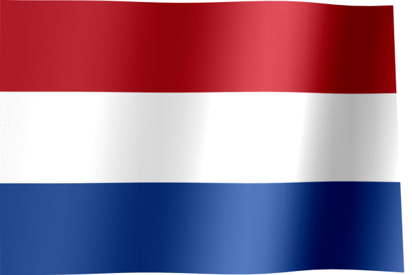

Hakim Ziyech is a professional footballer who plays as an attacking midfielder or winger for Premier League club Chelsea and the Morocco national team. He is nicknamed "The Wizard", a title given to him by his former club Ajax supporters. He has got 9 siblings. And he's Dutch, and Moroccan
Hakim Ziyech was born 19 march 1993, in Dronten in Netherlands.
